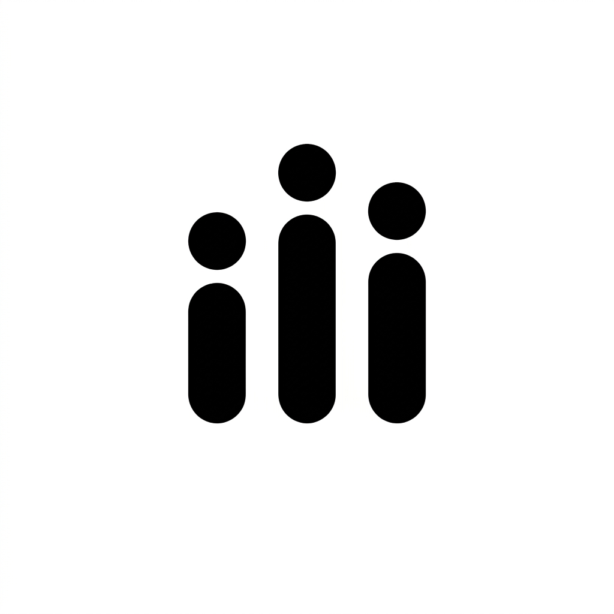

GellyTwenty minutes a day. One year to mastery.
Gelly is a calmer way to build the habits that matter — one quiet, focused session a day, with the distracting apps switched off while you work.
What it does
- A daily focus timer for one habit at a time (20, 30, 45 or 60 minutes).
- Blocks distracting apps for the length of your session, with a Strict mode when you need it.
- Streaks, focused-time stats, a heatmap, and milestones as the days add up to 365.
- Everything stays on your device. No ads, no trackers, no account required.
Support
Questions, bugs, or feedback? Email gellyapp@gmail.com and we'll get back to you.
© 2025 Gelly · Privacy Policy